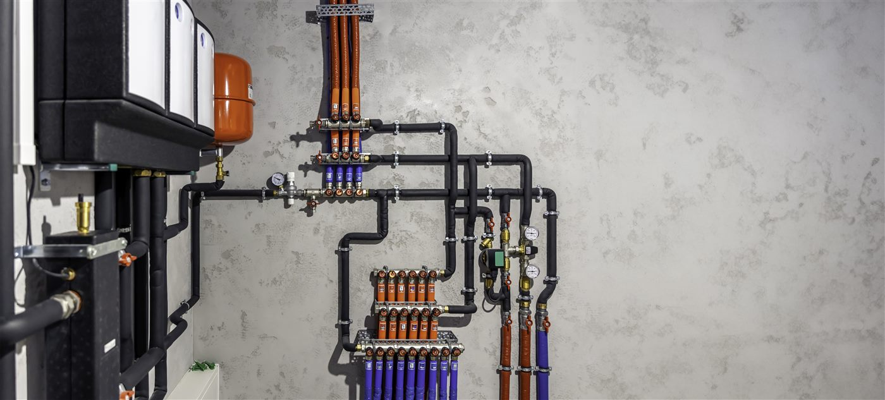

Technik für ganze Gebäude.
Sanitär-, Heizungs- und Lüftungsanlagen – fachgerecht realisiert für Neubau und Bestand.
Vom Mehrfamilienhaus bis zur gewerblichen Anlage: Wir realisieren und warten Sanitär-, Heizungs- und Lüftungstechnik für Hausverwaltungen, Bauträger und Unternehmen – alle Gewerke koordiniert aus einer Hand.
Ob Neubau, Modernisierung oder laufende Betreuung: Wir sind der verlässliche Haustechnik-Partner für gewerbliche Auftraggeber in Bayern und Baden-Württemberg – mit klarer Kommunikation und sauberer Ausführung.
Sanitär-, Heizungs- und Lüftungsanlagen – fachgerecht realisiert für Neubau und Bestand.
Regelmäßige Wartung Ihrer Anlagen sorgt für Betriebssicherheit, Werterhalt und lange Lebensdauer.
Von der Ausführung über die Inbetriebnahme bis zur Betreuung – koordiniert, termintreu und transparent.

Ob Heizzentrale, Sanitäranlage oder Lüftung im Mehrfamilienhaus: Wir installieren robuste Anlagen für den gewerblichen Dauerbetrieb – sauber dokumentiert und auf Wunsch mit regelmäßiger Wartung.
Wir arbeiten für Hausverwaltungen, Bauträger, Architekten sowie Gewerbe- und Industriebetriebe – vom Mehrfamilienhaus bis zur größeren Anlage.
Ja. Wir bieten regelmäßige Wartung und Service für Heizungs-, Sanitär- und Lüftungsanlagen – für einen sicheren, dauerhaften Betrieb.
Planungen führen wir nicht selbst aus. Wir arbeiten eng mit Fachplanern zusammen und vermitteln Ihnen bei Bedarf einen passenden, verfügbaren Planer.